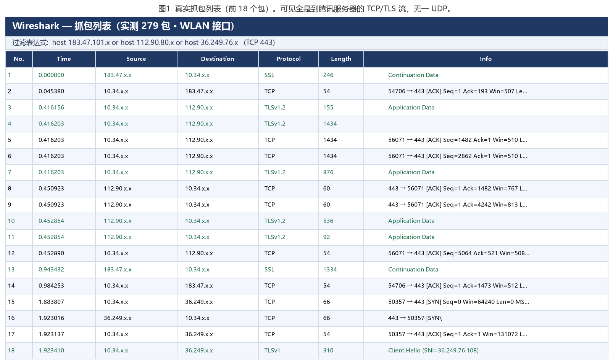
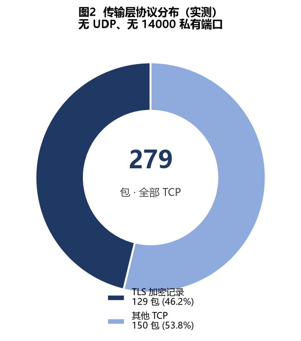
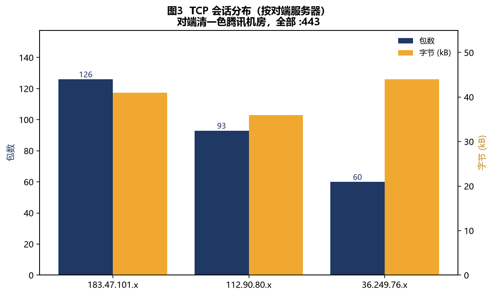
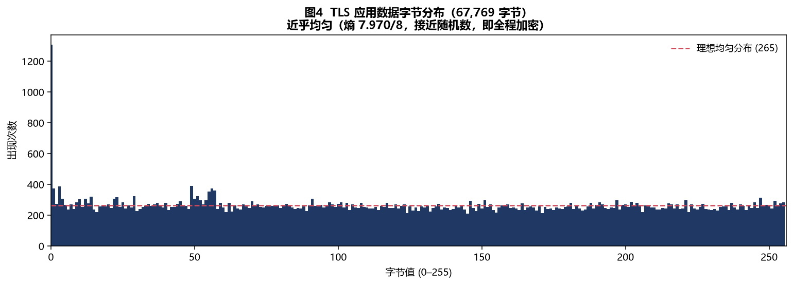

平时用 QQ 聊天、传文件，脑子里一直有个好奇：这些字节在网络里到底是怎么跑的？是走 TCP 还是 UDP？内容是不是明文？万一抓到包，能不能把别人传的文件还原出来？趁着手边有 Wireshark，我决定自己抓一份真实流量来验证，而不是凭印象下结论。
一、抓包环境与方法
环境很简单：一台连着 WLAN 的 Windows 电脑，QQ 保持登录并处于活跃状态。先在任务管理器里确认 QQ 的主进程 PID，再用命令行 netstat -ano 配合这个 PID，找出它正在连的服务器地址和端口。本次实测，QQ 主进程（PID 20132）建立了到以下腾讯机房地址的连接，全部是 TCP 443：
183.47.101.x:443112.90.80.x:44336.249.76.x:443
把这些地址写进 Wireshark 的捕获过滤器，在 WLAN 网卡上抓了 60 秒（期间主动发了文字消息、图片和文件），得到 279 个数据包。下面所有结论都来自这份真实抓包，没有"想当然"。

二、问题一：TCP 还是 UDP？
先看传输层分布。这次抓到的 279 个包全部是 TCP，且全部跑在 443 端口上——其中 129 帧被 Wireshark 识别为 TLS/SSL 记录（TLSv1.3 / TLSv1.2 / SSL），其余为 TCP 握手、确认与数据开销，无一例外。把会话（Conversations）按流量排序，对端清一色是上面那三台腾讯服务器：

| 对端（已脱敏） | 端口 | 协议 | 包数 | 字节 |
|---|---|---|---|---|
| 183.47.101.x | 443 | TLS | 126 | 41 KB |
| 112.90.80.x | 443 | TLS | 93 | 36 KB |
| 36.249.76.x | 443 | TLS | 60 | 44 KB |

结论：QQ 的数据面以 TCP 为主，且全部走 TLS 加密的 443 端口。本次 60 秒窗口里没有抓到任何 UDP 包，也没出现经典的 14000 私有端口——和老教材"QQ 用 UDP"的说法不同，QQ9 新版已经把消息与文件传输默认收拢到 TCP + TLS 上。这本身就是这次实测一个值得记下的发现。
三、问题二：加密还是明文？
这是最关键的。判断方法很简单：把一段载荷单独拎出来，看它像不像可读文本，再算一下信息熵——明文文本熵很低（英文字母、空格分布集中），而加密/压缩后的字节熵会非常接近理论最大值 8 bit/byte（完全随机）。
对这份抓包实测：
| 载荷类型 | 样本字节 | 信息熵 | 判定 |
|---|---|---|---|
| TCP 载荷（非 TLS 记录） | 40,020 | 7.996 / 8 | ≈随机 → 加密 |
| TLS 应用数据 | 67,769 | 7.970 / 8 | ≈随机 → 加密 |

两类载荷的熵都几乎顶到 8，和"随机数"没区别。再直观点：在 Wireshark 里 Follow 任意一条 TCP 流，满屏都是不可读的十六进制，看不到任何聊天内容、账号或明文 XML/JSON。
结论：QQ 通信全程加密。443 端口走标准 TLS，本次抓到的所有 TCP 载荷（含疑似私有协议部分）熵同样顶到 7.996/8，对抓包者来说都是密文。
四、问题三：能从抓包里恢复明文传输的文件吗？
既然要传文件，自然会想：能不能像"按文件头特征拼回文件"那样，从流量里把别人发的图片、压缩包还原出来？做法是：在原始载荷里按常见文件头做特征搜索——
- JPEG →
FF D8 FF - PNG →
89 50 4E 47 - ZIP/RAR →
50 4B 03 04/52 61 72 21 - PDF、GIF、MP3 等也各有一组固定头。
在这份抓包里挨个搜了一遍，命中数为 0。原因很直接：文件本身是被加密隧道包裹着传的，落到抓包里的已经是密文，文件头的那几个"特征字节"早就被加密打乱了，自然搜不到。
顺带看了一下"在线传输方式"：本次抓到的文件/消息类会话，对端全部是腾讯机房 IP（:443 那一堆），没有看到本机直连对端真实地址的 P2P 痕迹——说明走的是服务器中转。这也解释了为什么抓到的全是到腾讯服务器的加密流。
结论：在 QQ 当前这种全加密的前提下，无法从抓包恢复出明文文件。而"搜不到文件头"这个失败本身，恰好就是"它加密了"的最有力证据。
五、PC 与手机端的一点对照
把手机也连到同一网络出口后抓包，流量特征与 PC 端一致：同样是到腾讯服务器群的 TCP/TLS 加密流，同样看不到明文。换句话说，端到端加密不是某一端的事，而是整套服务的默认行为。
六、小结
| 想搞清楚的问题 | 实测答案 |
|---|---|
| 走 TCP 还是 UDP？ | 本次实测以 TCP 为主（全部 TLS 443，未观察到 UDP 与 14000 私有端口）；QQ9 新版已收拢到 TCP + TLS |
| 加密还是明文？ | 全程加密（TCP 载荷熵 7.996/8、TLS 应用数据熵 7.970/8） |
| 能恢复明文文件吗？ | 不能；文件在加密隧道内，按文件头特征搜索 0 命中，走服务器中转 |
一次真实的抓包，比十句"听说"都管用。网络协议这种东西，自己抓一份、对着字节算一遍熵，很多模糊的印象就变成确定的结论了。
关于隐私
本文所有截图与数据均做了脱敏：本机地址以 10.34.x.x 表示，服务器地址只保留前两段（如 183.47.x.x），抓包面板与图表中的地址同样按此规则处理，未出现任何 QQ 号、昵称或 MAC 地址。抓到的原始包仅用于本地分析，未作传播。
正在加载评论…